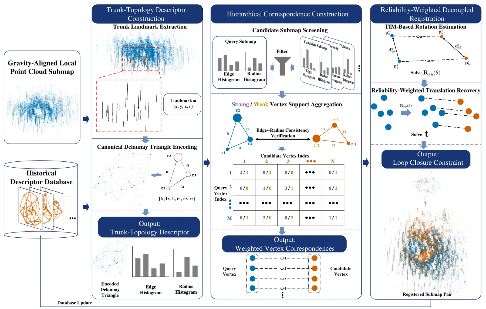
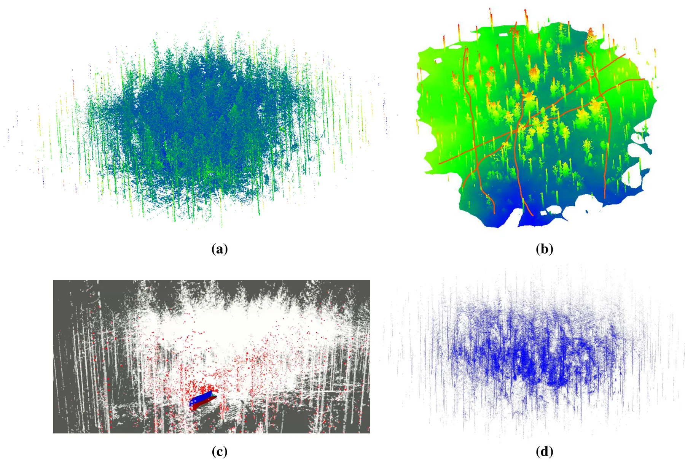

DTIF：基于 Delaunay 三角拓扑的复杂森林鲁棒闭环检测DTIF: Robust Loop Closure Detection via Delaunay Triangle Topology in Complex Forests
直接涉及 GNSS-denied 闭环、点云子图配准和感知混淆，结构先验清晰；场景专用性强，摘要没有量化指标且依赖树干提取与重力对齐。
一句话工作总结
利用树干 Delaunay 拓扑和可靠性加权的解耦位姿估计，在稀疏重复森林中完成闭环与全局配准。
摘要
DTIF 面向 GNSS-denied 森林中多平台局部地图的 initialization-free loop closure detection 和 global registration。方法先把树干提取为稳定 landmarks，并以 Delaunay topology 形成紧凑场景表示；随后依据边长和半径统计筛选候选子图，通过 edge-radius consistency verification 及强弱顶点支持聚合构造加权顶点对应；最后在重力对齐条件下，把拓扑可靠性权重注入解耦式 robust pose estimator，分别估计 yaw、水平平移与高程平移。摘要称其在模拟和真实森林数据上兼顾准确性、低计算开销和边缘平台可部署性。
Accurate forest inventory and large-scale mapping are essential for ecosystem monitoring and sustainable forest management. Multiple low-cost edge platforms enable efficient large-area data acquisition, but merging independently constructed local maps in GNSS-denied understory environments still requires initialization-free loop closure detection and global registration. This task is challenging because low-cost LiDAR point clouds are sparse and noisy, while repetitive trunk layouts and the lack of distinctive geometric landmarks lead to severe perceptual aliasing and false correspondences. To address these issues, we propose DTIF (Delaunay Triangulation in Forests), a lightweight trunk-topology-based framework for forest loop closure detection and global registration. Tree trunks are first extracted as stable landmarks and encoded using a Delaunay topology for compact scene representation. Candidate submaps are then screened using edge-length and radius statistics, followed by edge--radius consistency verification and strong/weak vertex support aggregation to construct weighted vertex correspondences. Finally, topology-derived reliability weights are incorporated into a decoupled robust pose estimator that separately estimates yaw, horizontal translation, and elevation translation under gravity alignment. Experiments on simulated and real-world forest datasets demonstrate that DTIF achieves accurate registration with low computational overhead, providing a favorable balance among robustness, efficiency, and deployability on resource-constrained edge platforms.
中文解读摘录
- 作者：Xin Zhao, Jianping Li, Qin Zou, Fuxun Liang, Zhen Dong, Bisheng Yang
- 价值判断：直接命中 GNSS-denied 条件下的 initialization-free loop closure 与全局配准，且针对稀疏噪声 LiDAR、树干重复布局和 perceptual aliasing。
- 技术要点：提取稳定树干 landmark，以 Delaunay topology 紧凑编码；用边长和半径统计筛选候选子图，再通过 edge-radius consistency 及强/弱顶点支持构造加权对应；重力对齐后，利用 topology-derived reliability weights 分离估计 yaw、水平平移和高程平移。
- 结果边界：摘要称模拟和真实森林数据上兼顾准确性、鲁棒性与低计算开销，但没有量化结果。方法依赖可稳定提取的树干、重力对齐和森林结构先验，跨季节及高密重复林分尤其值得核查。
- 链接：arXiv · PDF
图表/页面预览
{kind=link}

{kind=link}
